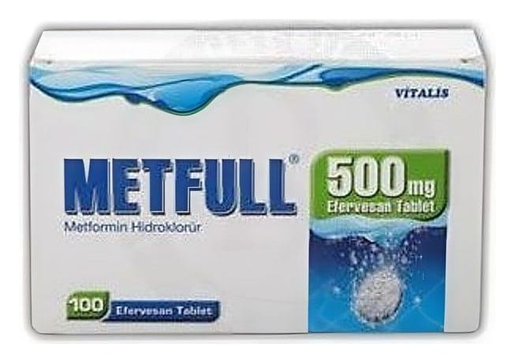

Metfull 500 mg Efervesan Tablet, 100 Adet

Ne için kullanılır
KT · Bölüm 1 METFULL, 500 mg metformin hidroklorür içeren, beyaz renkte, düz yüzeyli, yuvarlak efervesan tabletler şeklindedir. METFULL, 100 efervesan tablet içeren plastik tüp / silikajelli plastik kapak ambalajlarda piyasaya sunulmaktadır. METFULL, insüline bağımlı olmayan (Tip II) şeker hastalığında, özellikle diyet ile kontrol altına alınamayan şişman diyabetiklerde kullanılır. METFULL tek başına ya da diğer oral antidiyabetik ajanlarla veya insülin ile beraber kullanılabilir. 10 yaşından büyük çocuklarda ve yetişkinlerde, METFULL tek başına ya da insülin ile kombinasyon olarak kullanılabilir. Sadece diyetin yetersiz kalmasından sonra ilk seçenek tedavi olarak metfrominle tedavi edilen Tip II şeker hastalarında diyabetik komplikasyonlarda azalma görülmüştür.